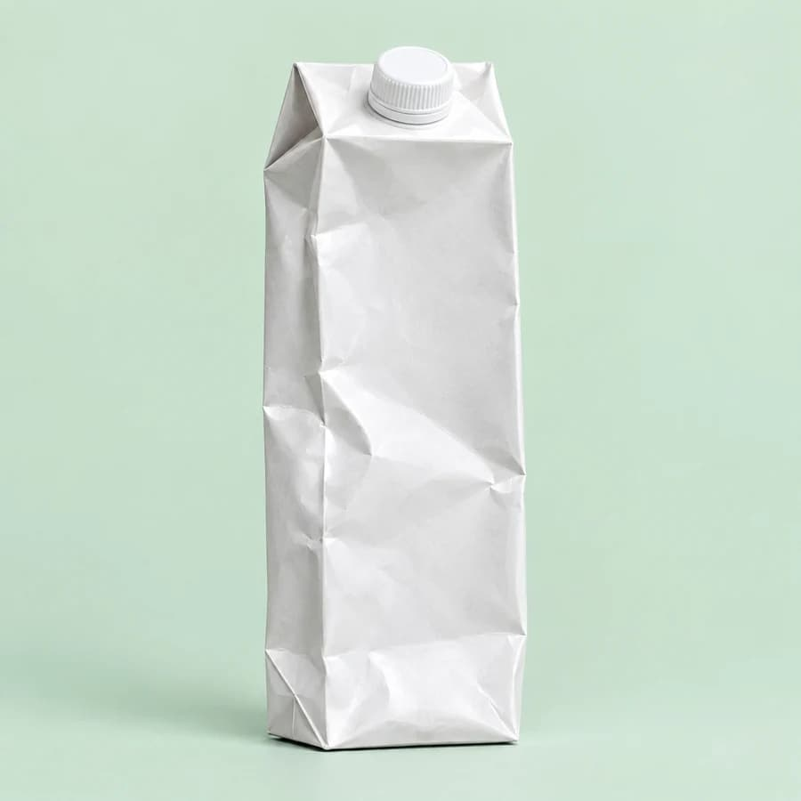
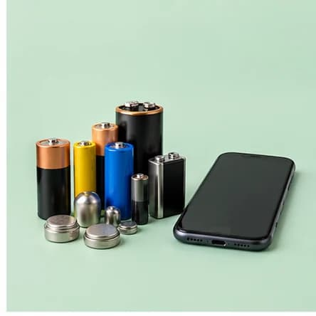
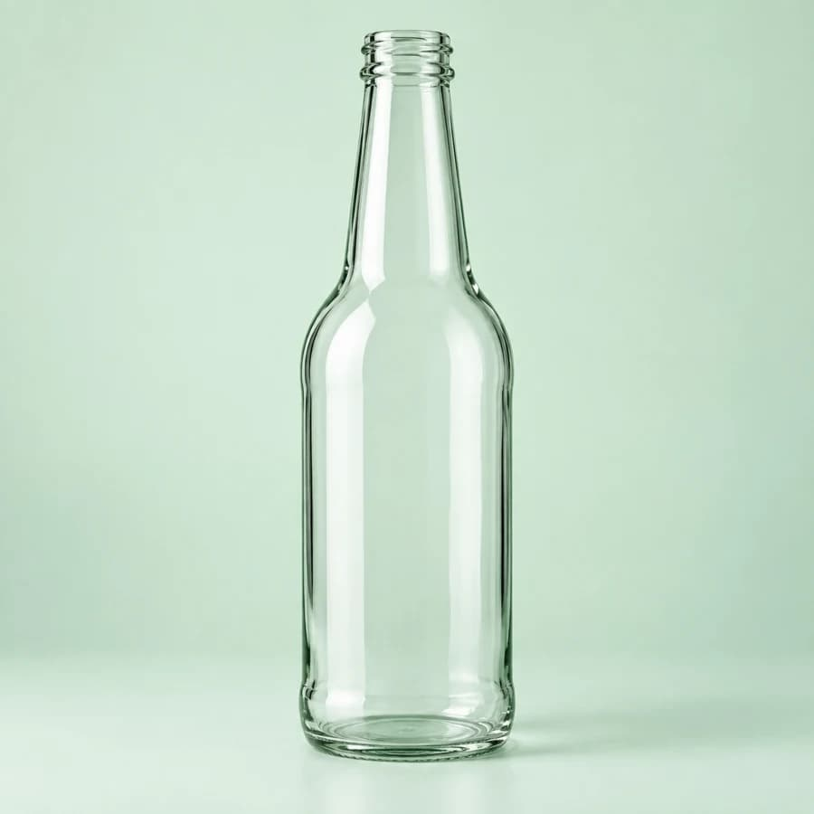
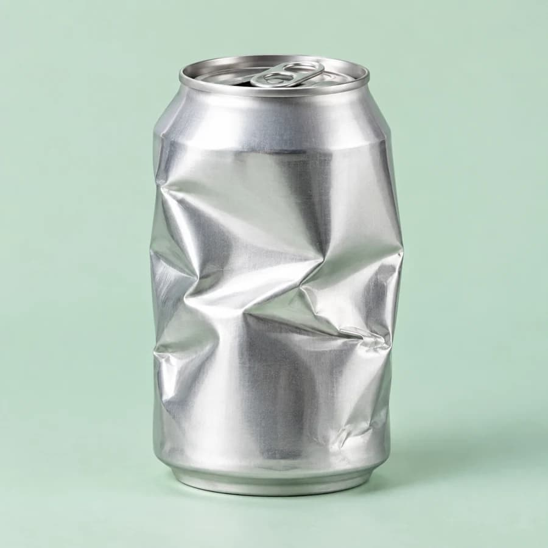

Identificacion
Consultas recientes de la sesión
Retoma rápidamente una consulta realizada durante esta sesión sin necesidad de volver a escribir o buscar el material.
Hoy

Botella plástica para bebidas
Hace 4 minutos

Envase de cartón para bebidas (Tetra Pak)
Hace 11 minutos

Pilas alcalinas AA
Hace 18 minutos

Botella de vidrio transparente
Hace 32 minutos

Latas de conserva y aluminio
Hace 55 minutos